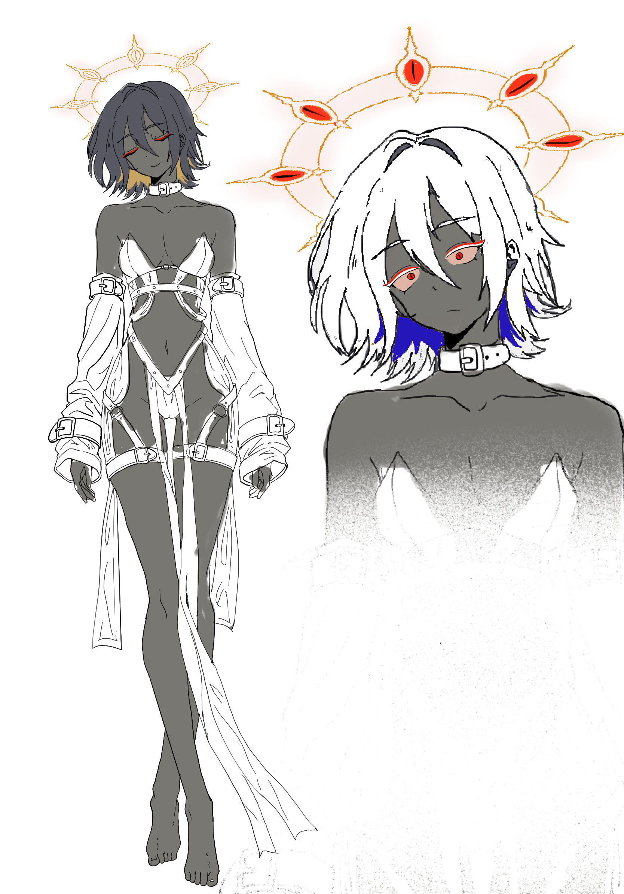

Goenitz
파가넬리아를 만든 창조자. 그녀의 자아가 깨어나는 현상조차 오로치 강림 의식의 일부로 해석한다.

오로치의 강림을 위해 인공적으로 만들어진 육신.
욕구는 있었으나 의지는 없었다.
그러나 신에게 닿고자 하는 간절한 갈망이
마침내 하나의 자아를 이루었다.
게닛츠가 네스츠의 인공수정 기술을 독자적으로 이용하여 만들어낸 존재. 오로치가 강림하기에 적합하도록 설계된 육신으로, 인간의 기본적인 생리적 욕구 이외의 독립적인 의지는 존재하지 않았다. 창조자인 게닛츠는 그녀를 딸과 같은 존재로 여길 여지가 있음에도, 철저히 강림을 위한 도구로 취급했다.
STATUS : COMPATIBILITY — EXCEPTIONAL
어느 날, 오로치에게 닿고자 하는 간절한 마음이 형태를 이루어 파가넬리아의 자아로 깨어났다. 그녀의 최초의 독립적인 의지는 신을 향한 갈망이었다. 게닛츠는 이 각성을 새로운 인격의 탄생이 아니라 강림 의식의 진전으로 받아들였다.
STATUS : CONSCIOUSNESS — AWAKENED
파가넬리아는 오로치의 그릇으로서 뛰어난 적합도를 지닌다. 강림 시 파가넬리아의 의식이 지워지는 것이 아니라 오로치와 의식을 공유하며, 두 존재의 의지는 충돌하지 않고 일치한다. 그녀는 게닛츠에게 자신을 신으로 경배할 것을 명령한다.
STATUS : DIVINE SYNCHRONIZATION — POSSIBLE
개체 P-05는 네스츠의 [■■■■■■] 기술을 이용해 제작되었다.
검열된 제작 기술을 복원하라.
ACCESS DENIED — 잘못된 복원 코드. 다시 선택하라.
개체 P-05, 명칭 PAGANELIA. 게닛츠가 네스츠의 인공수정 기술을 독자적으로 이용해 만든 오로치 강림용 육신. 생리적 욕구는 확인되나 독립적 자아는 관찰되지 않음.
파가넬리아를 만든 창조자. 그녀의 자아가 깨어나는 현상조차 오로치 강림 의식의 일부로 해석한다.
오로치의 의지와 자신의 의지가 일치하는 존재. 게닛츠에게 자신을 경배하라고 명령한다.
He made a vessel for his god.
And the vessel learned to speak.
그릇과 신의 의지가 일치하는 순간.
강림은 소멸이 아닌, 두 의식의 공존이다.